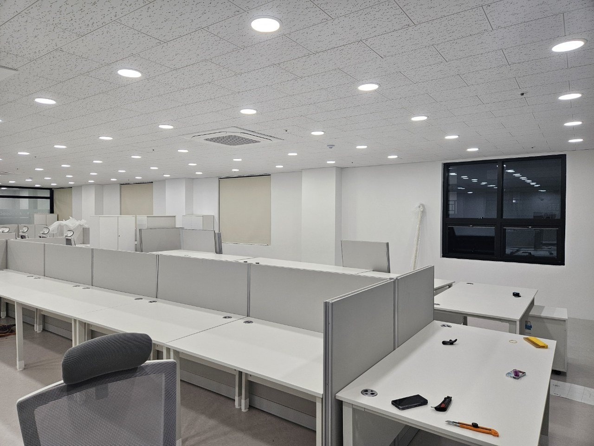
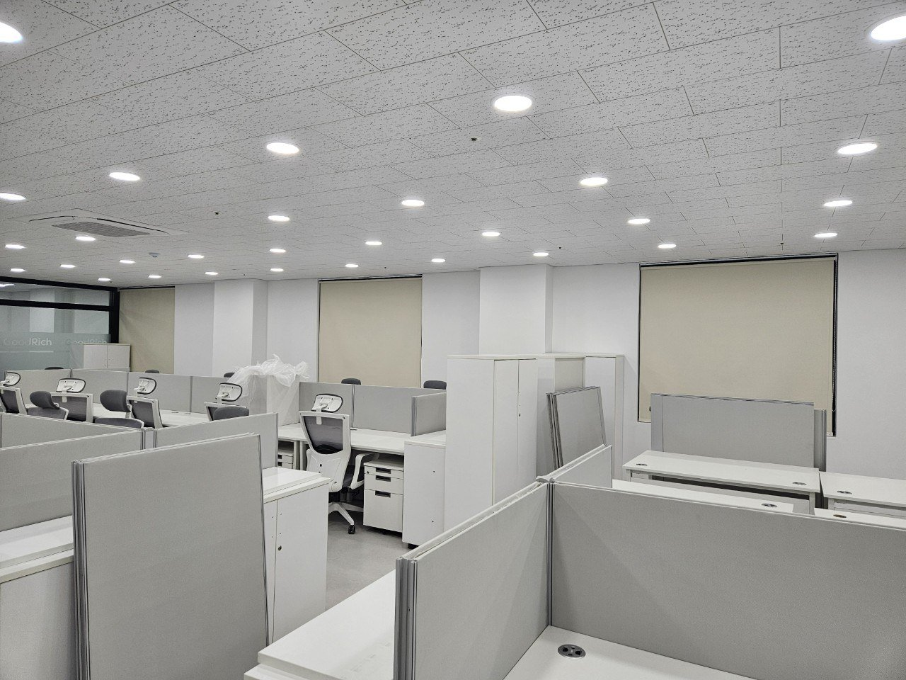
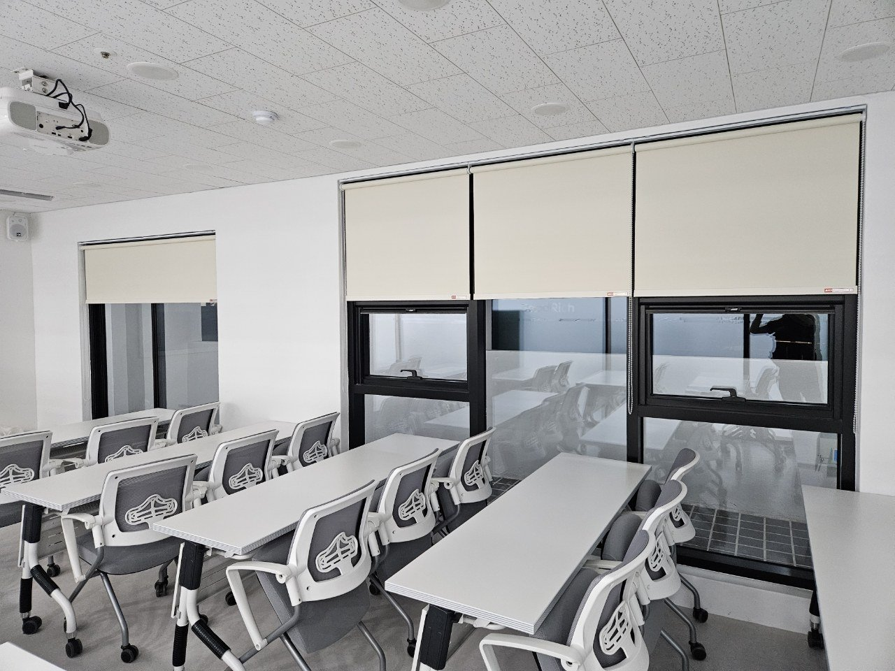
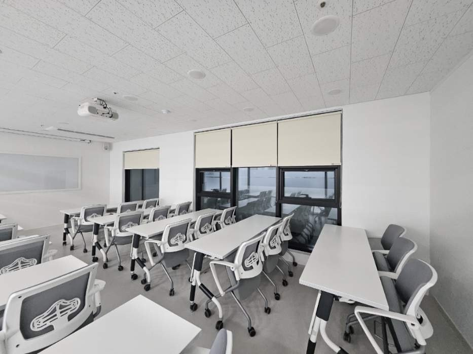
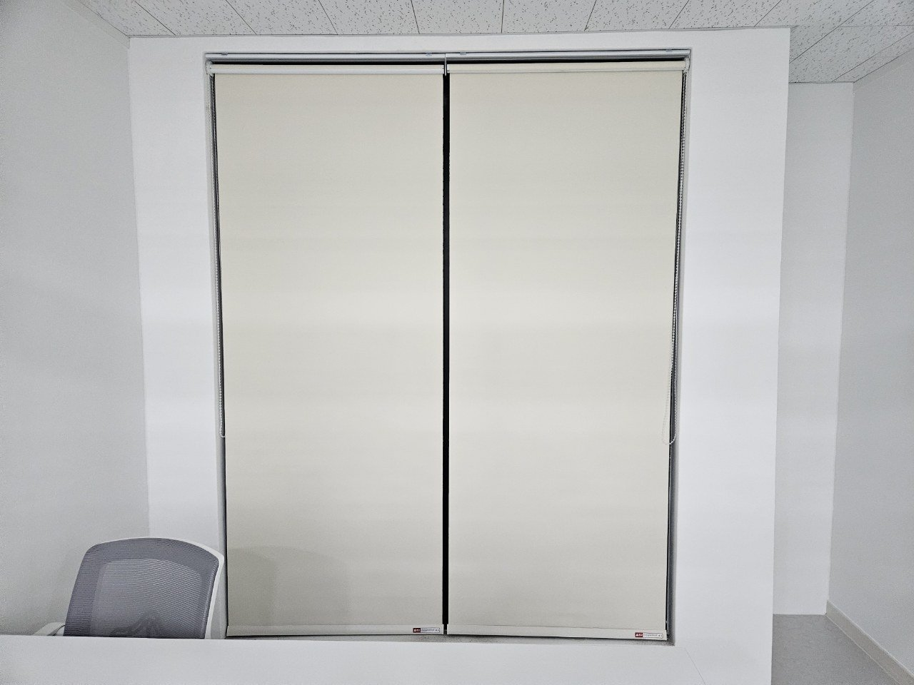
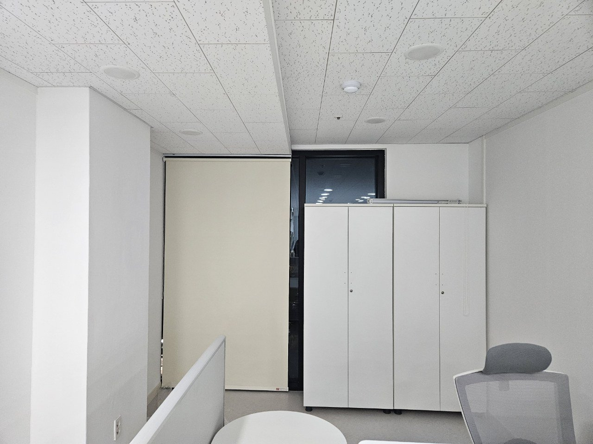

2026년 8월 3일 시공
영주 사무실
암막 롤스크린 전관 시공후기

영주에 있는 사무실 전관 시공입니다. 한 층에 대공간 사무실, 교육장, 회의실, 소회의실이 같이 있는 공간을 전부 아이보리 암막 롤스크린으로 통일했습니다.
사장님이 상담 때 제일 먼저 하신 말씀은 직원들 눈부심 이야기가 아니었습니다. "교육장에서 낮에 수업을 못 한다"였습니다.
빔프로젝터가 안 보이는 건 밝기 문제가 아닙니다
빔프로젝터를 켜도 창으로 들어온 빛 때문에 화면이 씻겨서 글씨가 안 읽힌다고 하셨습니다. 그래서 오전 교육을 저녁으로 미루고 계셨습니다.
프로젝터는 스크린에 빛을 더하는 장치입니다. 검정을 표현할 때는 아무것도 쏘지 않습니다. 즉 프로젝터가 만드는 검정은 스크린 원래 밝기입니다. 여기에 창에서 들어온 빛이 얹히면 검정이 회색으로 올라갑니다.
흰 부분은 이미 최대 출력이라 더 밝아질 여지가 적습니다. 그래서 검정만 올라가고 흰색은 그대로 남습니다. 대비가 무너지는 겁니다. 더 밝은 프로젝터를 사도 근본적으로 회복되지 않습니다. 들어오는 빛을 끊는 쪽이 정답입니다.

사무실은 정반대였습니다
같은 층 사무실은 문제의 성격이 달랐습니다. 여기는 완전히 어두워지면 안 됩니다. 어두우면 서류가 안 보이고 낮에도 조명을 종일 켜야 합니다.
사무실에서 실제로 문제가 되는 건 눈부심보다 모니터 화면에 창이 비치는 것입니다. 책상이 창을 등지고 놓이면 뒤쪽 창이 화면 유리에 거울처럼 반사됩니다. 화면 내용 위에 창문 모양이 겹치니까 눈이 계속 두 겹을 분리하려고 초점을 다시 잡습니다. 이게 하루 여덟 시간 쌓입니다.
이건 완전히 막을 필요가 없습니다. 반사는 창이 화면보다 밝을 때 생기니까 창면 밝기만 낮추면 사라집니다.


요구가 정반대인데 제품은 하나로 갔습니다
교육장은 완전 차광, 사무실은 창면 밝기만 낮추기. 얼핏 보면 원단을 두 종류로 나눠야 할 것 같습니다.
그런데 롤스크린은 내린 높이가 곧 차광량입니다. 교육장은 끝까지 내려 암전에 가깝게 만들고, 사무실은 창 상단 절반만 가려 반사만 없앱니다. 같은 제품 하나로 정반대 요구를 둘 다 처리할 수 있습니다.
원단을 두 종류로 나누면 금액이 올라가고, 색을 통일하려면 두 원단에서 같은 색을 찾아야 하는데 그게 항상 있지는 않습니다. 게다가 사무실은 방 용도가 자주 바뀝니다. 교육장이 회의실이 되고 회의실이 작업실이 되면 그때 창을 다시 해야 합니다. 통일해 두면 그대로 씁니다.


왜 버티컬이나 유리 필름이 아니었나
사무실이라고 하면 버티컬이나 유리 필름을 먼저 떠올리십니다. 이 현장에서는 둘 다 맞지 않았습니다.
유리 필름은 한 번 붙이면 조절이 안 됩니다. 흐린 날에도, 겨울 오후에도, 야근할 때도 계속 같은 정도로 어둡습니다. 그리고 교육장 대비를 살리려면 거의 암전에 가까운 필름을 붙여야 하는데, 그러면 교육이 없는 시간에 그 방을 못 씁니다.
버티컬은 각도 조절은 되지만 세로 날개 아래가 자유롭게 흔들리는 구조입니다. 이 현장은 창 앞에 책상과 캐비닛이 바짝 붙어 있어서 가구와 간섭이 생기고, 사람이 스치면 날개가 밀립니다. 완전 차광도 날개 사이 틈 때문에 어렵습니다.
롤스크린은 창면에 붙어서 위로 감기니까 창 앞 공간을 쓰지 않습니다. 책상이 붙어 있어도 상관없습니다.

폭이 넓은 창은 나눴습니다
창이 옆으로 길게 이어지는 자리는 통짜로 뽑지 않고 나눴습니다. 대수가 늘어나 금액은 올라가지만 오래 쓰는 기준으로는 나누는 쪽이 낫습니다.
롤스크린은 원단이 하나의 축에 감깁니다. 폭이 넓어질수록 축 중앙이 아래로 처지고, 처지면 원단이 한쪽으로 쏠려 감깁니다. 몇 달 뒤 "자꾸 삐뚤어진다"는 연락이 오는 게 대부분 이 경우입니다. 나누면 각 축이 짧아져 처짐이 줄고 조작도 가벼워집니다.

완전 차광은 원단이 아니라 틈에서 갈립니다
암막 원단을 썼는데도 방이 안 어두워지는 경우가 있습니다. 원인은 대부분 틈입니다.
옆쪽 — 폭이 창보다 좁으면 양옆에 세로로 빛줄기가 생깁니다. 프로젝터를 쓰는 방에서는 이 한 줄이 스크린을 때려 꽤 거슬립니다. 창틀보다 넉넉한 폭으로 뽑습니다.
위쪽 — 축이 감기는 자리와 창 상단 사이로 빛이 넘어옵니다. 브래킷을 올려서 창 상단을 충분히 덮게 잡습니다.
아래쪽 — 원단이 창 하단까지 닿아야 합니다. 짧으면 바닥으로 반사된 빛이 올라옵니다.
천장이 텍스인 사무실이라 텍스 자체에는 박지 않고 창틀 상부와 그 위 구조를 찾아 잡았습니다.

색은 실내가 아니라 건물 밖이 정합니다
전관을 아이보리 하나로 묶은 데는 이유가 있습니다. 사무실 창은 밖에서 건물을 볼 때 층 전체가 한 줄로 보입니다. 방마다 색이 다르면 밖에서 봤을 때 층이 얼룩덜룩해집니다.
아이보리는 실내에서 벽·천장과 붙어 튀지 않고, 밖에서 봤을 때도 유리 반사와 크게 싸우지 않습니다. 흰색보다 때가 덜 티고, 회색보다 실내가 어두워지지 않습니다.
조작줄은 사무실에서도 고정합니다
사무실은 아이가 없으니 괜찮다고 생각하기 쉽습니다. 그런데 사람이 많이 오가는 공간에서는 늘어진 줄이 의자 바퀴나 캐비닛 문에 걸립니다. 걸린 줄을 당기면 축이 상합니다.
그래서 안전 클립으로 벽에 고정했습니다. 위치는 책상 상판보다 위, 서서 손을 뻗으면 닿는 높이입니다. 앉은 사람 팔높이에 두면 앉을 때마다 걸리적거립니다.
전동은 이번에 넣지 않았습니다
창이 스무 개쯤 되면 전동을 검토할 만합니다. 다만 이번에는 전관 수동으로 갔습니다. 각 창이 그 자리 직원 손이 닿는 곳에 있고, 입주 초기라 몇 달 써보면서 어느 창이 실제로 자주 움직이는지 확인하는 게 순서라고 봤습니다.
대신 나중에 바꿀 여지는 남겼습니다. 전동 롤스크린은 축 안에 모터가 들어가 축 지름이 굵어지므로, 브래킷을 창틀 안쪽에 딱 맞춰 박으면 나중에 다시 뚫어야 합니다. 창 위쪽 벽에 여유를 두고 잡았고, 전원을 어느 경로로 끌어올지도 함께 봐뒀습니다.
시공 정보
지역 : 경상북도 영주시 (사무실)
공간 : 대공간 사무실 · 교육장 · 회의실 · 소회의실 (전관)
제품 : 아이보리 암막 롤스크린
포인트 : 빔프로젝터 대비 확보(완전 차광) / 모니터 반사 차단(부분 차광) / 같은 제품으로 요구 분리 / 넓은 창 분할 / 전동 전환 여지 확보 / 조작줄 안전 고정
작업 시간 : 1일
시공일 : 2026년 8월 3일
자주 묻는 질문
Q. 사무실 전체를 다 해야 하나요?
아닙니다. 복도 쪽 창이나 눈높이보다 한참 높은 고정창은 대개 필요 없습니다. 실측 때 걸러내면 대수가 줄어 금액이 내려갑니다.
Q. 빔프로젝터 있는 방은 무조건 암막인가요?
낮에 쓸 계획이면 그렇습니다. 저녁에만 쓴다면 채광 조절 원단으로도 충분합니다. 언제 쓰는지를 먼저 정리하시면 됩니다.
Q. 모니터 반사는 어떻게 잡나요?
창면 밝기를 낮추면 사라집니다. 완전히 막을 필요는 없습니다. 배치를 바꿀 수 있으면 창을 옆으로 두는 게 가장 좋습니다.
Q. 암막인데 방이 안 어두워집니다.
원단보다 틈이 원인인 경우가 대부분입니다. 옆·위·아래 세 군데를 확인합니다. 폭이 창보다 좁으면 양옆으로 빛줄기가 생깁니다.
Q. 넓은 창은 한 대로 뽑는 게 싸지 않나요?
제작 단가는 그럴 수 있어도 오래 쓰는 기준으로는 나누는 쪽이 낫습니다. 축 처짐과 쏠림이 생기면 결국 손을 봐야 합니다.
Q. 천장이 텍스인데 시공되나요?
됩니다. 텍스 자체에는 박지 않고 창틀 상부나 그 위 구조를 찾아 잡습니다. 실측 때 확인하는 항목입니다.
Q. 나중에 전동으로 바꿀 수 있나요?
가능합니다. 브래킷 여유 공간과 전원 경로만 미리 잡아두면 벽을 다시 뚫지 않아도 됩니다. 시공할 때 말씀 주시면 반영합니다.
Q. 업무 시간에 작업이 가능한가요?
공간에 따라 다릅니다. 이번 현장은 입주 정리 중이라 낮에 진행했지만, 운영 중인 사무실은 업무 시간을 피해 잡을 수 있습니다.
Q. 영주도 방문 시공 되나요?
됩니다. 영주, 안동, 예천, 문경, 상주, 의성, 영천, 포항, 경주, 울진 일대는 따솜커튼블라인드 이실장(010-2825-7275)이 직접 방문해 실측하고 시공합니다.
마무리
사무실 창은 앉는 사람을 기준으로 고르는 게 아니라 그 방에서 무엇을 보느냐를 기준으로 고릅니다. 화면을 보는 방인지, 서류를 보는 방인지. 이것만 정리해도 어느 창을 얼마나 막아야 하는지가 정해집니다.
교육장이 있는데 낮에 못 쓰고 계셨다면 그 공간은 사실 절반만 쓰고 계셨던 겁니다. 창 하나 정리하면 오전이 돌아옵니다.
비슷한 시공이 필요하신가요?
창 전체가 나오게 찍은 사진 한 장 주시면 방문 전에 견적을 알려드립니다.
사무실이라면 책상이 창을 등지고 있는지 옆으로 두고 있는지도 같이 보이게 찍어주시면 더 정확합니다.